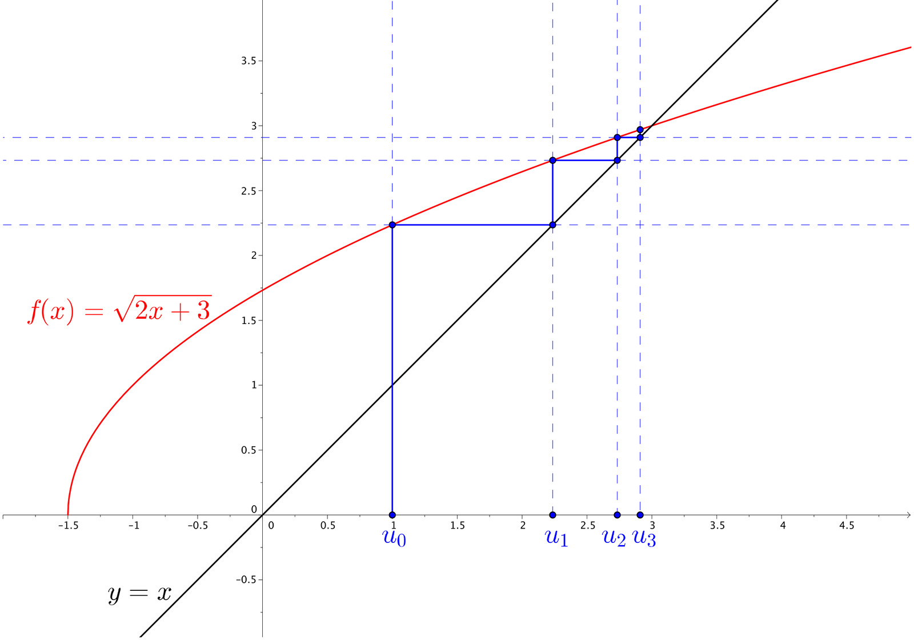
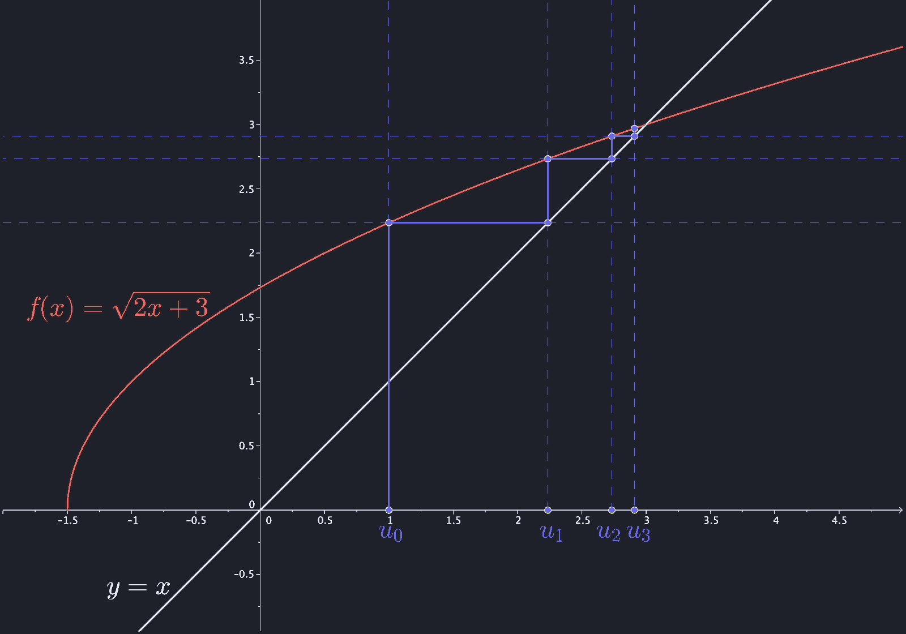
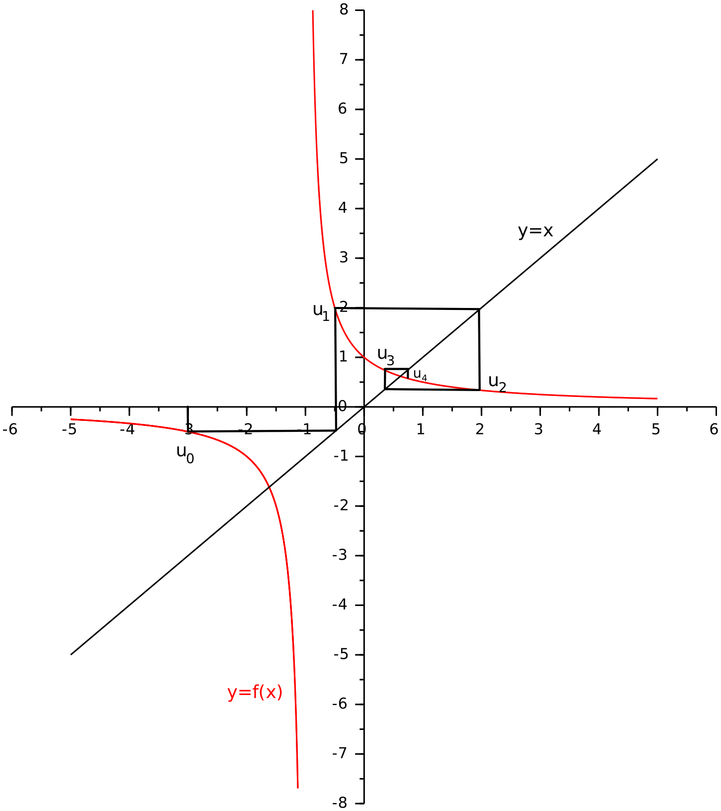
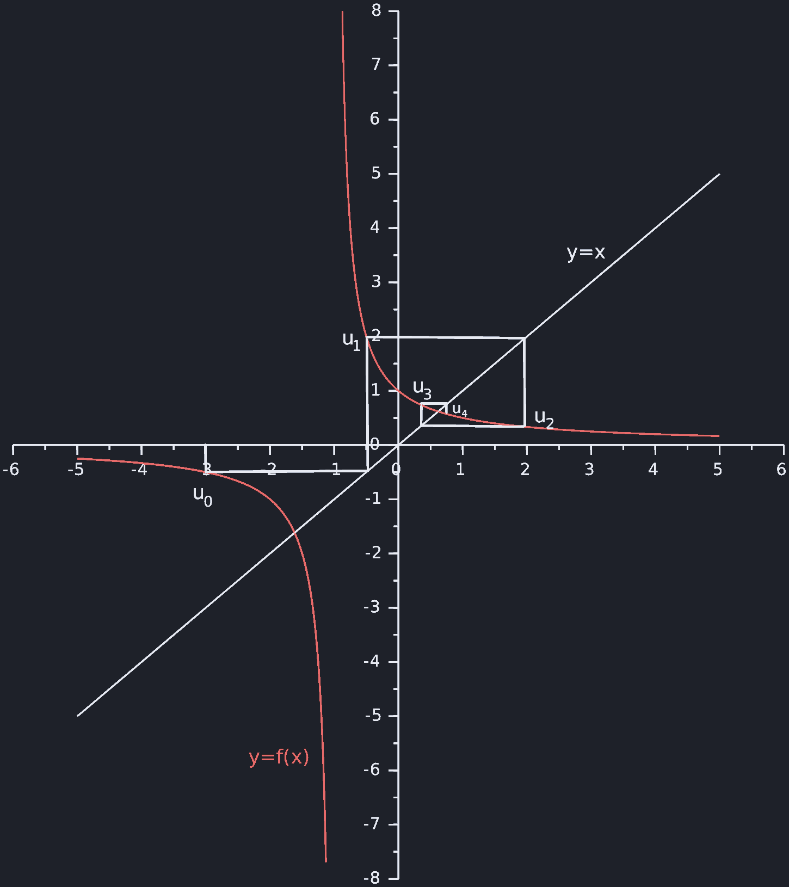

第 2 次习题课 数列¶
TD n°2 — Suites numériques
CORRIGÉ · 参考解答
阅读说明
每段先列法语原文；其下缩进、带深蓝竖条的小字号段落为中文翻译。加粗为关键词，括号内为中文释义。
Exercices à préparer¶
课前准备练习
Exercice 1.¶
suite arithmétique
练习 1.（等差数列 suite arithmétique）
Soit \((u_n)_{n\in\mathbb{N}}\) une suite arithmétique telle que \(u_7=7^2\) et \(u_{11}=11^2\).
设 \((u_n)_{n\in\mathbb{N}}\) 为等差数列（suite arithmétique），满足 \(u_7=7^2\) 且 \(u_{11}=11^2\)。
Calculer \(u_n\) pour tout \(n\).
求对任意 \(n\) 的 \(u_n\)。
Solution. En tant que suite arithmétique, \((u_n)\) vérifie \(\exists(a,b)\in\mathbb{R}^2,\ \forall n\in\mathbb{N},\ u_n=an+b\).
解. 作为等差数列，\((u_n)\) 满足 \(\exists(a,b)\in\mathbb{R}^2,\ \forall n\in\mathbb{N},\ u_n=an+b\)。
D'où le système
由此得到方程组
En faisant la différence entre ces deux lignes, on en déduit
将这两行相减，可得
Puis
于是
Finalement
最终，对任意 \(n\in\mathbb{N}\)，\(u_n=18n-77\)。
Exercice 2.¶
suite auxiliaire
练习 2.（辅助数列 suite auxiliaire）
Soit \((u_n)_{n\in\mathbb{N}}\) une suite définie par \(u_0=3\) et \(\forall n\geqslant 0,\ u_{n+1}=u_n^2\).
设 \((u_n)_{n\in\mathbb{N}}\) 是由 \(u_0=3\) 及 \(\forall n\geqslant 0,\ u_{n+1}=u_n^2\) 定义的数列。
1. Montrer que \(\forall n\in\mathbb{N},\ u_n>0\).
证明：\(\forall n\in\mathbb{N},\ u_n>0\)。
Solution. Montrons par récurrence sur \(n\in\mathbb{N}\) que \(\forall n\in\mathbb{N},\ u_n>0\) :
解. 我们对 \(n\in\mathbb{N}\) 用数学归纳法（récurrence）证明 \(\forall n\in\mathbb{N},\ u_n>0\)：
-
C'est vrai pour \(n=0\), \(u_0=3>0\).
当 \(n=0\) 时成立，\(u_0=3>0\)。
-
Supposons que pour un entier \(n\) donné, on ait \(u_n>0\), alors \(u_{n+1}=u_n^2>0\).
假设对某个给定的整数 \(n\) 有 \(u_n>0\)，则 \(u_{n+1}=u_n^2>0\)。
On conclut par récurrence \(\forall n\in\mathbb{N},\ u_n>0\).
由归纳法可得 \(\forall n\in\mathbb{N},\ u_n>0\)。
2. Calculer \(u_n\) pour tout \(n\) en utilisant la suite \((v_n)\) définie par \(\forall n\geqslant 0,\ v_n=\ln(u_n)\).
利用由 \(\forall n\geqslant 0,\ v_n=\ln(u_n)\) 定义的数列 \((v_n)\)，计算对任意 \(n\) 的 \(u_n\)。
Solution. Comme \(\forall n\in\mathbb{N},\ u_n>0\), la suite \((v_n)\) telle que \(\forall n\geqslant 0,\ v_n=\ln(u_n)\) est bien définie. De plus elle vérifie
解. 由于 \(\forall n\in\mathbb{N},\ u_n>0\)，满足 \(\forall n\geqslant 0,\ v_n=\ln(u_n)\) 的数列 \((v_n)\) 有良好定义。此外它满足
On reconnaît une suite géométrique et on a
可辨认出这是一个等比数列（suite géométrique），于是
D'où finalement, avec \(\forall n\in\mathbb{N}\) \(u_n=e^{v_n}=\left(e^{\ln 3}\right)^{2^n}\),
最终，由 \(\forall n\in\mathbb{N}\) \(u_n=e^{v_n}=\left(e^{\ln 3}\right)^{2^n}\) 可得上式，即对任意 \(n\in\mathbb{N}\)，\(u_n=3^{2^n}\)。
Exercice 3.¶
suite arithmético-géométrique
练习 3.（算术-几何数列 suite arithmético-géométrique）
Soit \(\lambda\in\mathbb{R}\).
设 \(\lambda\in\mathbb{R}\)。
On définit la suite \((u_n)_{n\in\mathbb{N}}\) par \(u_0=1\) et \(\forall n\geqslant 0,\ u_{n+1}-u_n=\lambda u_n+1\).
定义数列 \((u_n)_{n\in\mathbb{N}}\) 为 \(u_0=1\)，且 \(\forall n\geqslant 0,\ u_{n+1}-u_n=\lambda u_n+1\)。
Calculer \(u_n\) pour tout \(n\).
求对任意 \(n\) 的 \(u_n\)。
Solution. La suite stationnaire \(\forall n\in\mathbb{N},\ u_n=\ell\) vérifie \(\lambda\ell+1=0\).
解. 常数数列（suite stationnaire）\(\forall n\in\mathbb{N},\ u_n=\ell\) 满足 \(\lambda\ell+1=0\)。
Donc si \(\lambda\neq 0\), on a \(\ell=-1/\lambda\).
因此若 \(\lambda\neq 0\)，则 \(\ell=-1/\lambda\)。
Alors \(\forall n\in\mathbb{N}\), en soustrayant \(\ell=(1+\lambda)\ell+1\) à \(u_{n+1}=(1+\lambda)u_n+1\), on a
于是 \(\forall n\in\mathbb{N}\)，从 \(u_{n+1}=(1+\lambda)u_n+1\) 中减去 \(\ell=(1+\lambda)\ell+1\)，得到
C'est une suite géométrique, d'où
这是一个等比数列，因此
Et en remplaçant \(u_0\) et \(\ell\) par leur valeur
再代入 \(u_0\) 与 \(\ell\) 的值
Finalement
最终，对任意 \(n\in\mathbb{N}\)，\(u_n=\dfrac{(1+\lambda)^{n+1}-1}{\lambda}\)。
Si \(\lambda=0\), alors \((u_n)\) est une suite arithmétique de raison 1 et
若 \(\lambda=0\)，则 \((u_n)\) 是公差为 1 的等差数列，且
Exercice 4.¶
suites couplées
练习 4.（耦合数列 suites couplées）
Soient les suites \((a_n)_{n\in\mathbb{N}}\) et \((b_n)_{n\in\mathbb{N}}\) telles que
设数列 \((a_n)_{n\in\mathbb{N}}\) 与 \((b_n)_{n\in\mathbb{N}}\) 满足
即 \(a_0=1\)、\(b_0=0\)，且 \(\forall n\geqslant 0\)，\(a_{n+1}=4a_n-b_n\)、\(b_{n+1}=2a_n+b_n\)。
1. Montrer que \((a_n)\) et \((b_n)\) sont des suites récurrentes linéaires d'ordre 2.
证明 \((a_n)\) 与 \((b_n)\) 都是二阶线性递推数列（suites récurrentes linéaires d'ordre 2）。
Solution. En utilisant \(\forall n\geqslant 0,\ b_n=4a_n-a_{n+1}\), on a \(\forall n\geqslant 0\),
解. 利用 \(\forall n\geqslant 0,\ b_n=4a_n-a_{n+1}\)，对 \(\forall n\geqslant 0\) 有
De même, \(\forall n\geqslant 0\),
同理，\(\forall n\geqslant 0\)，
Les suites \((a_n)\) et \((b_n)\) sont donc bien des suites récurrentes linéaires d'ordre 2.
因此 \((a_n)\) 与 \((b_n)\) 确实是二阶线性递推数列。
2. Calculer \(a_n\) et \(b_n\) pour tout \(n\).
求对任意 \(n\) 的 \(a_n\) 与 \(b_n\)。
Solution. On cherche les solutions de \(\forall n\in\mathbb{N},\ u_{n+2}=5u_{n+1}-6u_n\) sous la forme \((A\,r^n)\) avec \(A,r\in\mathbb{C}\). On veut donc \(r\in\mathbb{C}\) vérifiant l'équation
解. 我们寻找 \(\forall n\in\mathbb{N},\ u_{n+2}=5u_{n+1}-6u_n\) 的形如 \((A\,r^n)\) 的解，其中 \(A,r\in\mathbb{C}\)。因此要求 \(r\in\mathbb{C}\) 满足方程
de discriminant \(\Delta=25-24=1\), d'où \(r=\dfrac{5\pm 1}{2}=2\) ou \(3\). Ainsi on obtient pour \((a_n)\) et \((b_n)\) une forme générale commune
其判别式 \(\Delta=25-24=1\)，故 \(r=\dfrac{5\pm 1}{2}=2\) 或 \(3\)。于是 \((a_n)\) 与 \((b_n)\) 具有共同的通解形式
avec \(A,B,A',B'\in\mathbb{R}\) déterminés par les deux premiers termes de chaque suite.
其中 \(A,B,A',B'\in\mathbb{R}\) 由每个数列的前两项确定。
On a \(a_0=1\), \(b_0=0\) d'où \(a_1=4\), \(b_1=2\) et les équations linéaires
由 \(a_0=1\)、\(b_0=0\) 得 \(a_1=4\)、\(b_1=2\)，并得到线性方程组
D'où on obtient \(A=-1\), \(B=2\) d'une part et \(A'=-2\), \(B'=2\) d'autre part.
由此一方面得到 \(A=-1\)、\(B=2\)，另一方面得到 \(A'=-2\)、\(B'=2\)。
Finalement \(\forall n\geqslant 0\),
最终，对任意 \(n\geqslant 0\)，\(a_n=-2^n+2\times 3^n\)，\(b_n=-2^{n+1}+2\times 3^n\)。
Exercice 5.¶
suite récurrente
练习 5.（递推数列 suite récurrente）
On considère la suite \((u_n)_{n\in\mathbb{N}}\) définie par \(u_0=1\) et \(\forall n\geqslant 0,\ u_{n+1}=\sqrt{2u_n+3}\).
考虑由 \(u_0=1\) 及 \(\forall n\geqslant 0,\ u_{n+1}=\sqrt{2u_n+3}\) 定义的数列 \((u_n)_{n\in\mathbb{N}}\)。
1. Déterminer l'ensemble de définition de la fonction \(f:x\mapsto\sqrt{2x+3}\) et étudier ses variations sur cet ensemble.
确定函数 \(f:x\mapsto\sqrt{2x+3}\) 的定义域，并研究它在该定义域上的单调性。
Solution. La fonction \(f\) est définie si et seulement si \(2x+3\geqslant 0\) c'est-à-dire \(x\geqslant -\dfrac{3}{2}\). Donc \(\mathcal{D}_f=\left[-\dfrac{3}{2},+\infty\right[\).
解. 函数 \(f\) 有定义当且仅当 \(2x+3\geqslant 0\)，即 \(x\geqslant -\dfrac{3}{2}\)。因此 \(\mathcal{D}_f=\left[-\dfrac{3}{2},+\infty\right[\)。
Comme \(x\mapsto\sqrt{x}\) est croissante sur \([0,+\infty[\), \(f\) est croissante sur \(\mathcal{D}_f\).
由于 \(x\mapsto\sqrt{x}\) 在 \([0,+\infty[\) 上递增，\(f\) 在 \(\mathcal{D}_f\) 上递增。
2. Dresser le tableau de signe de la fonction \(x\mapsto f(x)-x\).
作出函数 \(x\mapsto f(x)-x\) 的符号表（tableau de signe）。
Solution. On a les équivalences suivantes
解. 有如下等价关系
D'où le tableau
由此得下表
3. Sur un graphique, tracer la courbe représentative de \(f\), la droite d'équation \(y=x\) et les premiers termes de la suite \((u_n)\).
在图上画出 \(f\) 的图象、直线 \(y=x\) 以及数列 \((u_n)\) 的前几项。
Solution. 解.
 
4. À l'aide du graphique de la question précédente conjecturer les propriétés de la suite \((u_n)\) et démontrer ces propriétés par récurrence.
借助上一问的图象猜想（conjecturer）数列 \((u_n)\) 的性质，并用数学归纳法证明这些性质。
Solution. On conjecture : la suite \((u_n)\) est croissante majorée par 3.
解. 我们猜想：数列 \((u_n)\) 递增，且以 3 为上界。
Montrons par récurrence sur \(n\in\mathbb{N}\) que \(\forall n\in\mathbb{N},\ 1=u_0\leqslant u_n\leqslant u_{n+1}\leqslant 3\) :
我们对 \(n\in\mathbb{N}\) 用归纳法证明 \(\forall n\in\mathbb{N},\ 1=u_0\leqslant u_n\leqslant u_{n+1}\leqslant 3\)：
-
C'est vrai pour \(n=0\) car \(u_1=\sqrt{5}\geqslant 1=u_0\) et \(u_1=\sqrt{5}\leqslant 3\).
当 \(n=0\) 时成立，因为 \(u_1=\sqrt{5}\geqslant 1=u_0\) 且 \(u_1=\sqrt{5}\leqslant 3\)。
-
Supposons que pour un \(n\in\mathbb{N}\) donné, \(u_0\leqslant u_n\leqslant u_{n+1}\leqslant 3\), alors, comme \(f\) est définie croissante sur \(\mathcal{D}_f\) on a
— 假设对给定的 \(n\in\mathbb{N}\) 有 \(u_0\leqslant u_n\leqslant u_{n+1}\leqslant 3\)，则由于 \(f\) 在 \(\mathcal{D}_f\) 上有定义且递增，有
\[ f(u_0)\leqslant f(u_n)\leqslant f(u_{n+1})\leqslant f(3). \]Or \(f(u_0)=u_1\), \(f(u_n)=u_{n+1}\), \(f(u_{n+1})=u_{n+2}\) et \(f(3)=\sqrt{6+3}=3\), d'où, comme par ailleurs \(u_0\leqslant u_1\),
而 \(f(u_0)=u_1\)，\(f(u_n)=u_{n+1}\)，\(f(u_{n+1})=u_{n+2}\)，且 \(f(3)=\sqrt{6+3}=3\)；又因 \(u_0\leqslant u_1\)，故
\[ u_0\leqslant u_1\leqslant u_{n+1}\leqslant u_{n+2}\leqslant 3. \]On conclut par récurrence
由归纳法可得
\[ \forall n\in\mathbb{N},\qquad 1=u_0\leqslant u_n\leqslant u_{n+1}\leqslant 3. \]
Vocabulaire clé 重点词汇
第一部分（Exercices à préparer）核心术语
- suite arithmétique：等差数列
- raison：公差（等比数列中为公比）
- suite auxiliaire：辅助数列
- suite géométrique：等比数列
- suite arithmético-géométrique：算术-几何数列（\(u_{n+1}=au_n+b\) 型）
- suite stationnaire：常数数列
- suite récurrente linéaire d'ordre 2：二阶线性递推数列
- suites couplées：耦合数列
- équation caractéristique：特征方程
- discriminant：判别式
- on reconnaît…：可辨认出……
- vérifier：满足；验证
- suite croissante majorée：递增且有上界的数列
- récurrence：数学归纳法
- initialisation / hérédité：初始步骤 / 递推步骤
- ensemble de définition：定义域
- tableau de signe：符号表
- courbe représentative：函数图象
- conjecturer：猜想
- premiers termes：前几项
- calculer \(u_n\) pour tout \(n\)：求通项 \(u_n\)
Exercices supplémentaires¶
补充练习
Exercice 6.¶
suite récurrente linéaire d'ordre deux
练习 6.（二阶线性递推数列 suite récurrente linéaire d'ordre deux）
Soit \((u_n)_{n\in\mathbb{N}^*}\) une suite récurrente linéaire d'ordre deux telle que \(u_1=-4\), \(u_2=5\), \(u_3=10\) et \(u_4=7\).
设 \((u_n)_{n\in\mathbb{N}^*}\) 是二阶线性递推数列，满足 \(u_1=-4\)、\(u_2=5\)、\(u_3=10\)、\(u_4=7\)。
Calculer \(u_n\) pour tout \(n\).
求对任意 \(n\) 的 \(u_n\)。
Solution. La suite \((u_n)\) en tant que suite récurrente linéaire d'ordre vérifie
解. 数列 \((u_n)\) 作为线性递推数列，满足
Ce qui pour \(n=1\) et \(2\) nous donne le système d'équation sur \(a,b\)
令 \(n=1\) 与 \(2\)，得到关于 \(a,b\) 的方程组
dont la solution est \(a=\dfrac{6}{5}\), \(b=-1\).
其解为 \(a=\dfrac{6}{5}\)，\(b=-1\)。
La suite \((u_n)\) vérifie donc \(\forall n\in\mathbb{N}^*,\ u_{n+2}=\dfrac{6}{5}u_{n+1}-u_n\).
因此数列 \((u_n)\) 满足 \(\forall n\in\mathbb{N}^*,\ u_{n+2}=\dfrac{6}{5}u_{n+1}-u_n\)。
L'équation caractéristique associée, donnant les solutions de la forme \((A\,r^n)\) avec \(A,r\in\mathbb{C}\), est
相应的特征方程（其解给出形如 \((A\,r^n)\) 的解，\(A,r\in\mathbb{C}\)）为
Son discriminant réduit vaut
其简化判别式（discriminant réduit）为上式。
d'où \(r_\pm=\dfrac{3}{5}\pm i\dfrac{4}{5}\) c'est-à-dire un nombre complexe \(r_+\) de module \(|r_+|=1\) et son conjugué \(r_-=\overline{r_+}\). Par la suite on note \(r=r_+\).
由此 \(r_\pm=\dfrac{3}{5}\pm i\dfrac{4}{5}\)，即一个模为 \(|r_+|=1\) 的复数 \(r_+\) 及其共轭 \(r_-=\overline{r_+}\)。下文记 \(r=r_+\)。
La suite \((u_n)\) vérifie alors
于是数列 \((u_n)\) 满足上式。
Étant donnés les premiers termes et le fait que \(\arccos(3/5)\) n'est pas une valeur remarquable, on cherche \((u_n)\) sous la forme
给定前几项，且注意到 \(\arccos(3/5)\) 不是特殊角（valeur remarquable），我们把 \((u_n)\) 设为如下形式
avec \(\alpha,\beta\in\mathbb{R}\).
其中 \(\alpha,\beta\in\mathbb{R}\)。
Remarque : en prenant la forme exponentielle \(r=\rho e^{i\theta}\), on a \(\forall n\in\mathbb{N}^*\),
注： 取指数形式（forme exponentielle）\(r=\rho e^{i\theta}\)，则 \(\forall n\in\mathbb{N}^*\)，
Les quatre premiers termes de la suites donnent
数列的前四项给出上述等式。
On trouve alors grâce à la deuxième ligne \(\alpha=5\) et grâce à la première ligne \(\dfrac{3}{5}\alpha+\dfrac{4}{5}\beta=-4\), \(\beta=-\dfrac{35}{4}\).
于是由第二行得 \(\alpha=5\)，由第一行得 \(\dfrac{3}{5}\alpha+\dfrac{4}{5}\beta=-4\)，即 \(\beta=-\dfrac{35}{4}\)。
On vérifie que les deux lignes suivantes donne le bon résultat :
验证后两行确实给出正确结果：
et
以及
Donc \(\forall n\in\mathbb{N}^*\),
因此对任意 \(n\in\mathbb{N}^*\)，\(u_n\) 由上式给出。
Exercice 7.¶
suite récurrente
练习 7.（递推数列 suite récurrente）
Soit \((u_n)_{n\in\mathbb{N}}\) la suite récurrente définie par \(u_0=-3\) et \(\forall n\geqslant 0,\ u_{n+1}=\dfrac{1}{1+u_n}\).
设 \((u_n)_{n\in\mathbb{N}}\) 是由 \(u_0=-3\) 及 \(\forall n\geqslant 0,\ u_{n+1}=\dfrac{1}{1+u_n}\) 定义的递推数列。
1. Soit la fonction \(g:x\mapsto\dfrac{1}{1+x}\).
设函数 \(g:x\mapsto\dfrac{1}{1+x}\)。
Étudier cette fonction : donner son domaine de définition, dresser son tableau de variation.
研究该函数：给出其定义域，作出其单调性表（tableau de variation）。
Solution. La fonction \(g\) est définie pour \(x\neq 1\), donc \(\mathcal{D}_g=\mathbb{R}\setminus\{-1\}\).
解. 函数 \(g\) 在 \(x\neq 1\) 时有定义，因此 \(\mathcal{D}_g=\mathbb{R}\setminus\{-1\}\)。（原文如此；应为 \(x\neq -1\)。）
La fonction \(g\) est continue dérivable sur son domaine de définition car composée de fonctions continues dérivables sur leur domaine de définition. De plus \(\forall x\in\mathcal{D}_g\)
函数 \(g\) 在其定义域上连续可导，因为它是几个在各自定义域上连续可导的函数的复合。此外 \(\forall x\in\mathcal{D}_g\)，有
D'où le tableau de variation
由此得单调性表
2. Sur un graphique, tracer la courbe représentative de \(g\), la droite d'équation \(y=x\) et les premiers termes de la suite \((u_n)\).
在图上画出 \(g\) 的图象、直线 \(y=x\) 以及数列 \((u_n)\) 的前几项。
Solution. 解.
 
3. Montrer que \((u_n)\) est bien définie.
证明 \((u_n)\) 有良好定义（bien définie）。
Solution. Les premiers termes de la suite \((u_n)\) sont \(u_0=-3\), \(u_1=-1/2\) et \(u_2=2\).
解. 数列 \((u_n)\) 的前几项为 \(u_0=-3\)、\(u_1=-1/2\)、\(u_2=2\)。
Montrons par récurrence sur \(n\in\mathbb{N}\setminus\{0,1\}\) que \(\forall n\geqslant 2,\ u_n>0\) :
我们对 \(n\in\mathbb{N}\setminus\{0,1\}\) 用归纳法证明 \(\forall n\geqslant 2,\ u_n>0\)：
-
C'est vrai pour \(n=2\), \(u_2=2>0\).
当 \(n=2\) 时成立，\(u_2=2>0\)。
-
Supposons pour un \(n\geqslant 2\) donné, \(u_n>0\), alors \(u_{n+1}=\dfrac{1}{1+u_n}>0\).
— 假设对给定的 \(n\geqslant 2\) 有 \(u_n>0\)，则 \(u_{n+1}=\dfrac{1}{1+u_n}>0\)。
On conclut par récurrence \(\forall n\geqslant 2,\ u_n>0\), donc \(\forall n\geqslant 2,\ u_n\in\mathcal{D}_g\) et \((u_n)\) est bien définie.
由归纳法得 \(\forall n\geqslant 2,\ u_n>0\)，因此 \(\forall n\geqslant 2,\ u_n\in\mathcal{D}_g\)，即 \((u_n)\) 有良好定义。
4. Étudier les suites \((u_{2n})\) et \((u_{2n+1})\).
研究数列 \((u_{2n})\) 与 \((u_{2n+1})\)。
Solution. Soit \(\ell\) tel que \(\ell>0\) et \(\ell=\dfrac{1}{1+\ell}\) alors \(\ell=\dfrac{-1+\sqrt{5}}{2}\). On a alors \(\forall n\geqslant 2\)
解. 设 \(\ell\) 满足 \(\ell>0\) 且 \(\ell=\dfrac{1}{1+\ell}\)，则 \(\ell=\dfrac{-1+\sqrt{5}}{2}\)。于是 \(\forall n\geqslant 2\) 有
Donc la suite \((v_n)_{n\geqslant 2}\) telle que \(v_n=u_n-\ell\) est de signe alternant et de norme décroissante.
因此由 \(v_n=u_n-\ell\) 定义的数列 \((v_n)_{n\geqslant 2}\) 符号交替且绝对值递减。
Ainsi la suite \((u_{2n})_{n\geqslant 1}\) est décroissante minorée par \(\ell\) et \((u_{2n+1})_{n\geqslant 1}\) est croissante majorée par \(\ell\).
于是数列 \((u_{2n})_{n\geqslant 1}\) 递减且以 \(\ell\) 为下界，而 \((u_{2n+1})_{n\geqslant 1}\) 递增且以 \(\ell\) 为上界。
Exercice 8.¶
suite intermédiaire
练习 8.（中间数列 suite intermédiaire）
Soit \(\lambda>0\).
设 \(\lambda>0\)。
Soit \((u_n)_{n\in\mathbb{N}}\) la suite définie par \(u_0>0\), \(u_1>0\) et \(\forall n\geqslant 0,\ u_{n+2}=\lambda\sqrt{u_{n+1}u_n}\).
设数列 \((u_n)_{n\in\mathbb{N}}\) 由 \(u_0>0\)、\(u_1>0\) 及 \(\forall n\geqslant 0,\ u_{n+2}=\lambda\sqrt{u_{n+1}u_n}\) 定义。
Calculer \(u_n\) en fonction de \(n\).
用 \(n\) 表示 \(u_n\)。
(Indication : Introduire la suite auxiliaire \((v_n)\) définie par \(\forall n\geqslant 0,\ v_n=\ln(u_n)+\alpha n\ln\lambda\) avec \(\alpha\) un réel judicieusement choisi.)
（提示： 引入辅助数列（suite auxiliaire）\((v_n)\)，其中 \(\forall n\geqslant 0,\ v_n=\ln(u_n)+\alpha n\ln\lambda\)，\(\alpha\) 为适当选取的实数。）
Solution. On montre par récurrence que \(\forall n\in\mathbb{N},\ u_n>0\).
解. 用归纳法证明 \(\forall n\in\mathbb{N},\ u_n>0\)。
On définit \(\forall n\in\mathbb{N},\ v_n=\ln(u_n)\). Alors \(\forall n\in\mathbb{N}\)
定义 \(\forall n\in\mathbb{N},\ v_n=\ln(u_n)\)。则 \(\forall n\in\mathbb{N}\)
où on a posé \(\ell=\ln\lambda\).
其中记 \(\ell=\ln\lambda\)。
On pose alors \(\forall n\in\mathbb{N},\ w_n=v_n+\alpha n\ell\), et on a \(\forall n\in\mathbb{N}\)
再令 \(\forall n\in\mathbb{N},\ w_n=v_n+\alpha n\ell\)，则 \(\forall n\in\mathbb{N}\)
On pose donc \(\alpha=-\dfrac{2}{3}\) pour que \((w_n)\) soit une suite récurrente linéaire.
于是取 \(\alpha=-\dfrac{2}{3}\)，使 \((w_n)\) 成为线性递推数列。
Son équation caractéristique est alors
其特征方程为
donc \(r=1\) ou \(-\dfrac{1}{2}\).
故 \(r=1\) 或 \(-\dfrac{1}{2}\)。
Il existe \(A,B\in\mathbb{R}\) tels que
存在 \(A,B\in\mathbb{R}\) 使得
On trouve
解得 \(A\) 与 \(B\) 如上。
Et finalement \(\forall n\in\mathbb{N}\),
最终，对任意 \(n\in\mathbb{N}\)，\(u_n\) 由上式给出。
Vocabulaire clé 重点词汇
第二部分（Exercices supplémentaires）核心术语
- suite récurrente linéaire d'ordre deux：二阶线性递推数列
- équation caractéristique：特征方程
- discriminant réduit (\(\Delta'\))：简化判别式
- nombre complexe：复数
- conjugué：共轭
- module：模
- forme exponentielle：指数形式
- partie réelle / partie imaginaire：实部 / 虚部
- valeur remarquable：特殊值（特殊角）
- signe alternant：符号交替
- norme décroissante：绝对值递减
- suite minorée / majorée：有下界 / 有上界的数列
- suite intermédiaire：中间数列
- logarithme népérien：自然对数
- judicieusement choisi：适当选取的
- en fonction de \(n\)：用 \(n\) 表示
- tableau de variation：单调性表
- étudier une fonction：研究一个函数
- dresser un tableau：列出（作出）表格
- on pose：令
- d'où：由此
- être bien définie：有良好定义